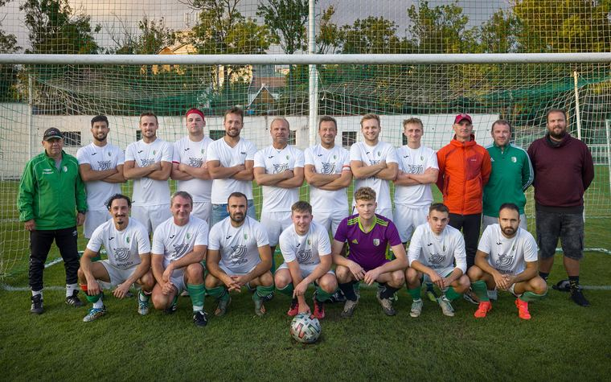
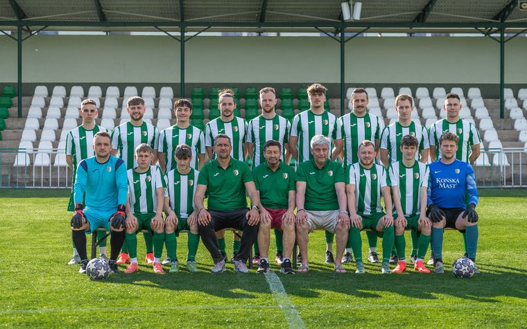
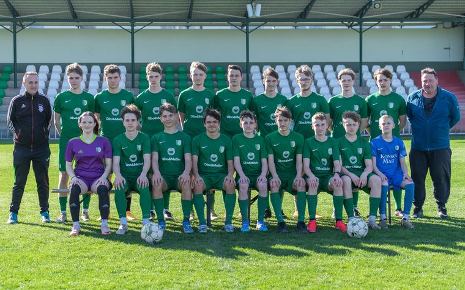
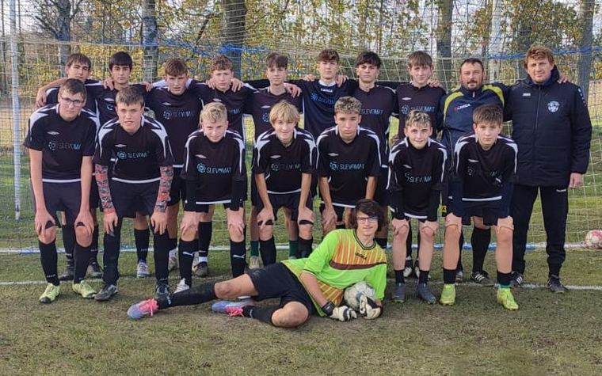
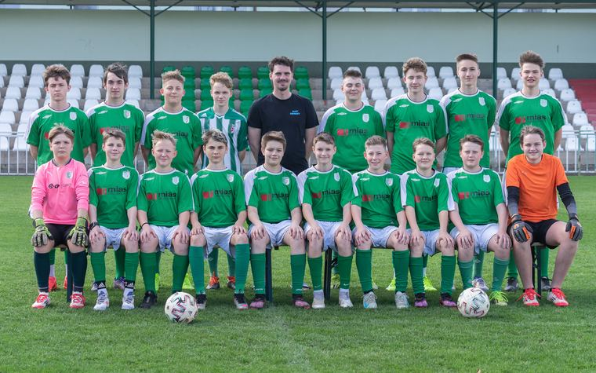
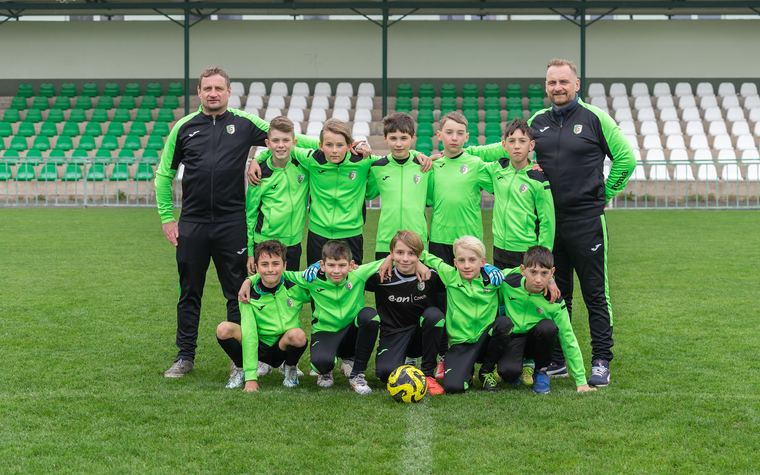
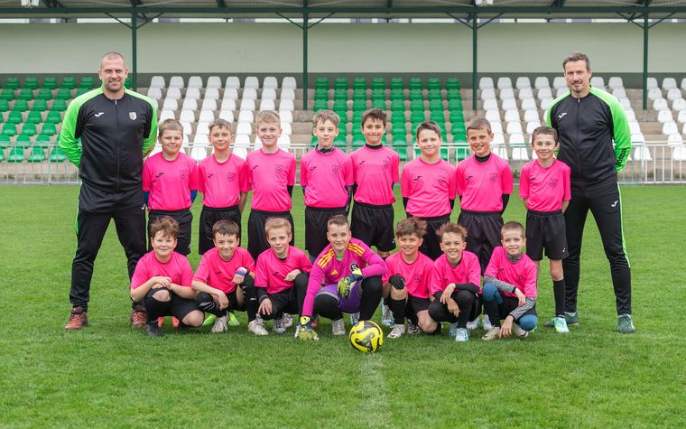
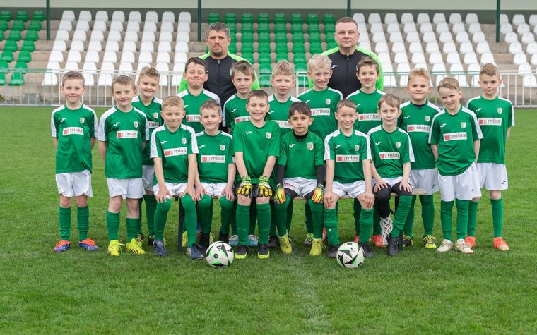
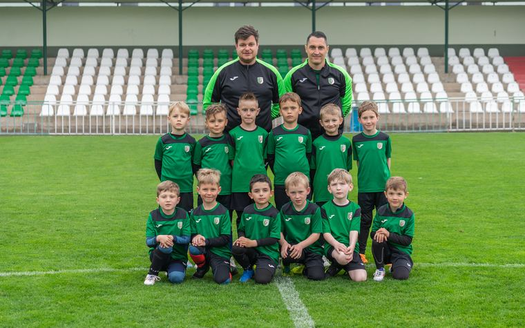
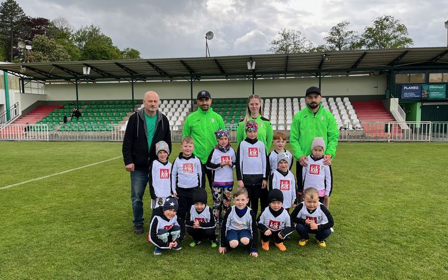

{kind=link}
{kind=link}

Zvětšit
Muži
Muži B
8. liga mužů. Rezerva, kde dostávají prostor mladí hráči z dorostu i zkušení matadoři.

V Hlinsku se hraje fotbal ve všech věkových kategoriích. Nejmladší začínají ve školičce v pěti letech, nejstarší nastupují ve třetí nejvyšší soutěži v republice. Kliknutím na fotku si ji zobrazíte ve větším.
Vlajková loď klubu. Áčko hraje 4. českou fotbalovou ligu, tedy třetí nejvyšší soutěž v republice. Domácí zápasy nastupuje na hlavní ploše areálu Olšinky.
Béčko, dorost, žáci i přípravky. U každého mužstva najdete soutěž, ve které hraje, jeho fotku a odkaz na aktuální tabulku.

Zvětšit8. liga mužů. Rezerva, kde dostávají prostor mladí hráči z dorostu i zkušení matadoři.

Zvětšit
Zvětšit
Zvětšit
Zvětšit
Zvětšit
Zvětšit
Zvětšit
Okresní soutěž mladších přípravek. Nejmladší soutěžní kategorie klubu.

Zvětšit fotkuTady všechno začíná. Kluci i holky se hravou formou učí základy pohybu, koordinace a práce s míčem. Žádné zkušenosti nejsou potřeba, stačí sportovní boty a chuť běhat.
Průběžné pořadí, výsledky i rozlosování všech našich mužstev vede FAČR na portálu Fotbal.cz. Kliknutím se otevře oficiální tabulka dané soutěže.
| Tým | Soutěž | Odkaz |
|---|---|---|
| Muži A | 4. česká fotbalová liga, skupina C | Tabulka |
| Muži B | 8. liga mužů | Tabulka |
| Dorost U19 | 4. liga dorostu U19, skupina A | Tabulka |
| Dorost U17 | 4. liga mladšího dorostu U17 | Tabulka |
| Žáci starší | 3. liga starších žáků, skupina A | Tabulka |
| Žáci mladší | 3. liga mladších žáků, skupina A | Tabulka |
Od pěti let až po dospělé. Napište nám věk dítěte a my poradíme, do kterého mužstva zapadne a kdy chodí na trénink.
{kind=link}
{kind=link}
{kind=link}
{kind=link}
{kind=link}
{kind=link}
{kind=link}
{kind=link}